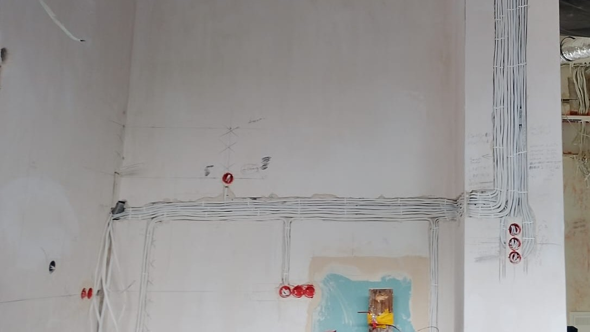
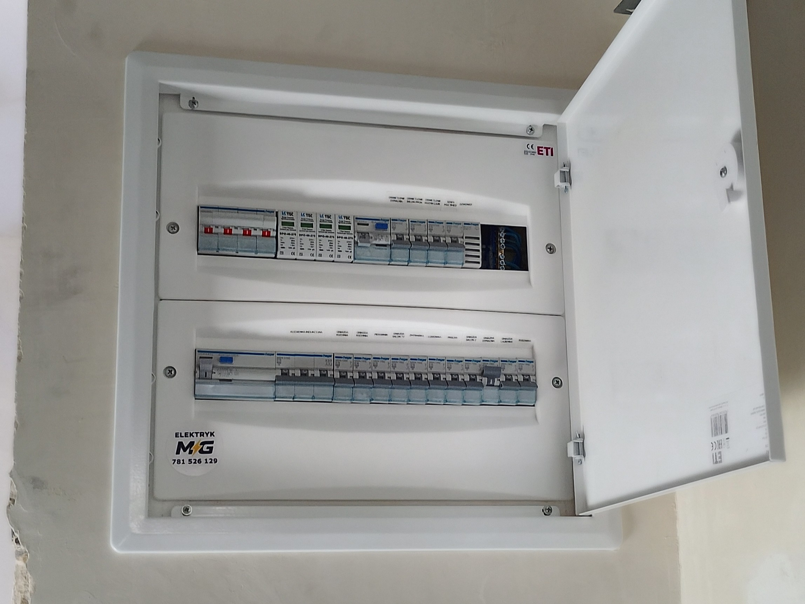
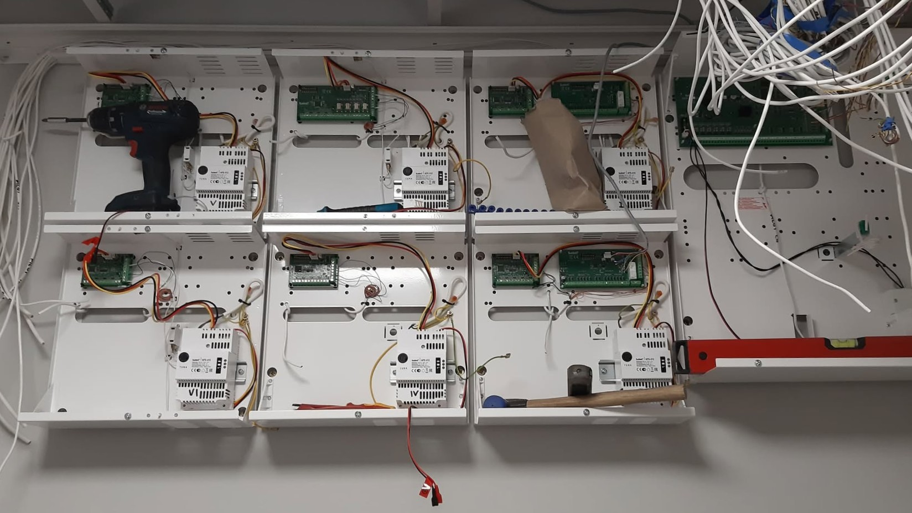

Instalacje elektryczne
Nowe instalacje w domach, mieszkaniach i lokalach. Okablowanie, obwody, puszki, rozdzielnice i przygotowanie instalacji pod wykończenie.
Elektryk MG • Lublin i okolice
Wykonujemy instalacje elektryczne, przeróbki po deweloperze, modernizacje rozdzielnic, usuwanie usterek oraz montaż monitoringu, alarmów i domofonów. Obsługujemy domy, mieszkania, lokale i firmy na terenie Lublina oraz okolicznych miejscowości.
Usługi
Pomagamy przy instalacjach w domach i mieszkaniach, modernizacjach po remontach, awariach oraz systemach zabezpieczeń.
Nowe instalacje w domach, mieszkaniach i lokalach. Okablowanie, obwody, puszki, rozdzielnice i przygotowanie instalacji pod wykończenie.
Dołożenie gniazd, przesunięcia punktów, wymiana osprzętu, przeróbki po deweloperze, dopasowanie instalacji do nowego układu pomieszczeń.
Wybijające zabezpieczenia, brak zasilania, uszkodzone gniazda, przełączniki, obwody i inne usterki wymagające sprawdzenia instalacji.
Montaż monitoringu CCTV, systemów alarmowych, domofonów i wideodomofonów dla domów, mieszkań, lokali oraz firm.
Dlaczego Elektryk MG
Praktyka w branży elektrycznej i technicznej zdobywana przy realnych realizacjach, remontach, awariach oraz systemach zabezpieczeń.
Poza instalacjami elektrycznymi wykonujemy również monitoring, alarmy, domofony i powiązane prace techniczne.
Działamy lokalnie, więc łatwiej umówić oględziny, sprawdzić zakres prac i wrócić na kolejny etap po wykończeniówce.
Przykładowe prace
Kilka typowych zakresów prac, które realizujemy przy mieszkaniach, domach, lokalach i firmach.

Przesunięcia punktów, dodatkowe gniazda, oświetlenie, zasilanie sprzętów i przygotowanie instalacji pod dalsze prace wykończeniowe.

Porządkowanie zabezpieczeń, opis obwodów, podział instalacji i dopasowanie rozdzielnicy do aktualnych potrzeb budynku lub lokalu.

Montaż kamer CCTV, systemów alarmowych, domofonów i wideodomofonów wraz z przygotowaniem okablowania oraz uruchomieniem systemu.
O firmie
Elektryk MG świadczy usługi elektryczne na terenie Lublina i okolic. Wykonujemy instalacje elektryczne, modernizacje, usuwanie awarii oraz montaż systemów zabezpieczeń, takich jak monitoring, alarmy i domofony.
Przed rozpoczęciem prac ustalamy zakres, kolejność działań i najważniejsze szczegóły techniczne. Dzięki temu klient wie, co obejmuje usługa i na jakim etapie można przejść do dalszych prac.
Więcej o firmieNajlepiej zadzwoń albo wyślij zdjęcia na WhatsApp – szybciej ocenimy zakres prac.
Zadzwoń lub napisz na WhatsApp. Opisz krótko sprawę, a jeśli możesz – wyślij zdjęcia miejsca pracy, rozdzielnicy albo usterki.